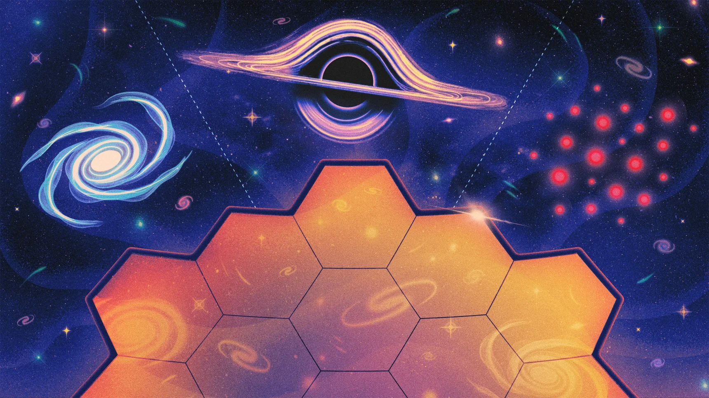

Astrophysicists Puzzle Over Webb’s New Universe
Faced with observations of early black holes and galaxies that weren’t expected to exist, scientists have come up with a wealth of new theories to explain them. Now they just need to figure out which ones are true.